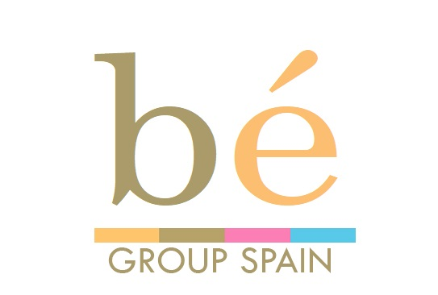
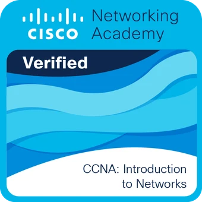

Administración de sistemas informáticos
Prácticas profesionales en Bé Group Spain en el área de administración de sistemas informáticos.
Estudiante de ASIR con interés en sistemas, redes y programación.
Soy metódico, organizado y resolutivo, con facilidad para aprender y trabajar en equipo. Actualmente curso Administración de Sistemas Informáticos en Red y he realizado prácticas en administración de sistemas informáticos.

Prácticas profesionales en Bé Group Spain en el área de administración de sistemas informáticos.

Formación en administración de redes con Cisco Packet Tracer.
Experiencia formativa con Zinjai, Thonny y Arduino, además de HTML, CSS, JavaScript y PHP.
Grado Superior · IES Cavanilles, Alicante.
IES San Blas, Alicante.
Inglés: EOI Alicante (2024–2025). Valenciano: IES San Blas (2024–2025).
¿Tienes una idea, proyecto o una oportunidad?